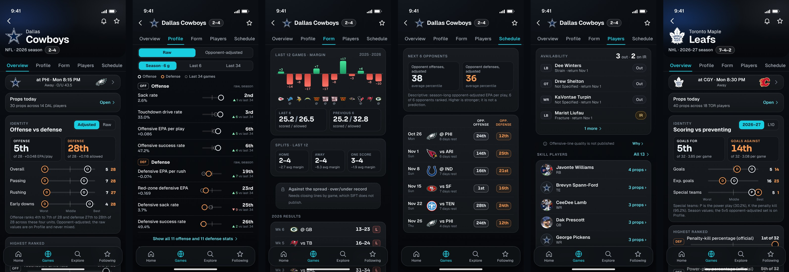
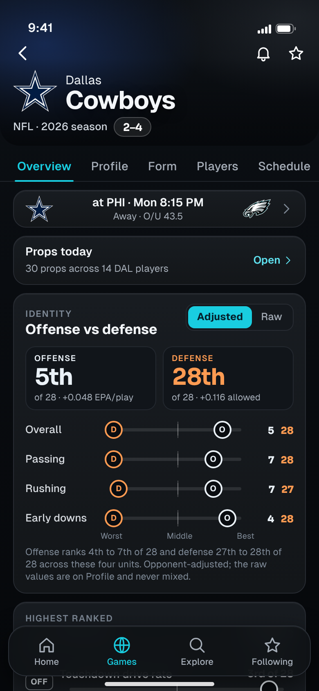
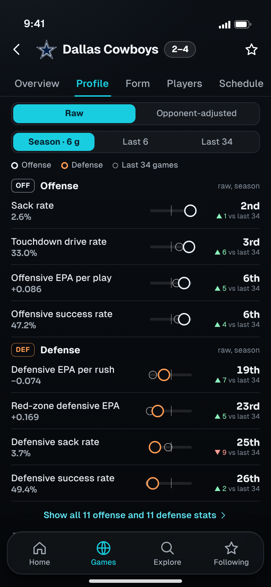
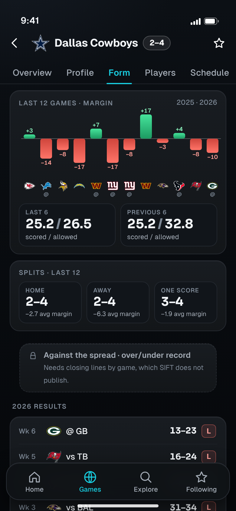
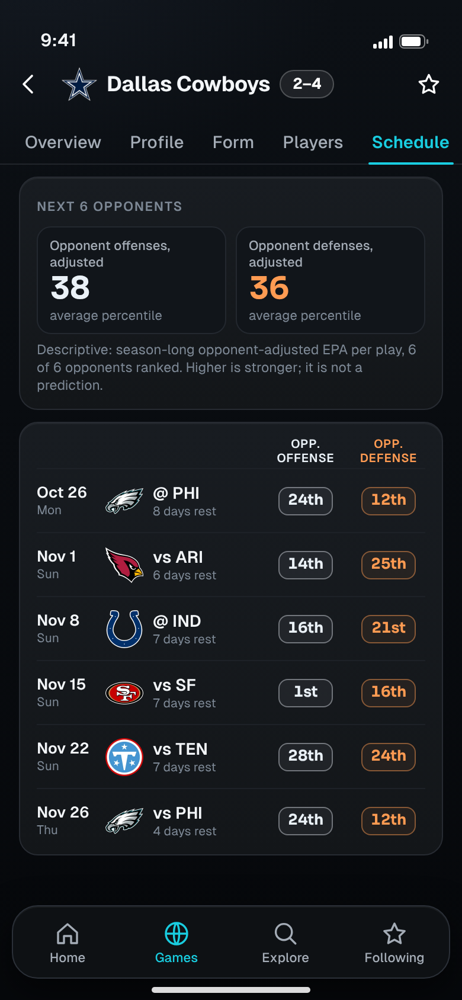
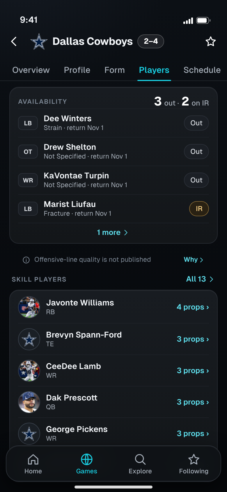
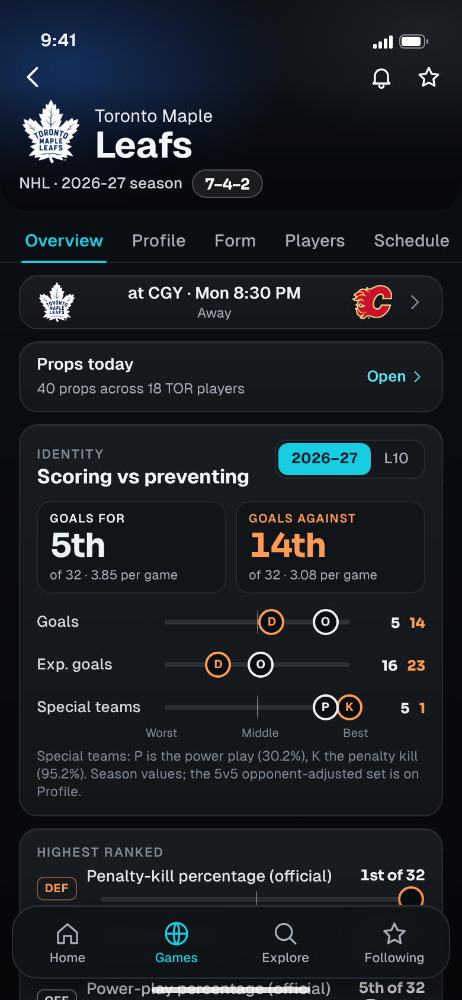

<title>SIFT Team Research</title>
<meta name="claude:viewport-fit-sides" content="cover">
<link rel="stylesheet" href="https://fonts.googleapis.com/css2?family=Geist:wght@400;500;600;700&family=Sora:wght@600;700&display=swap">
<style>
  :root { color-scheme: dark; --bg:#080b10; --bg2:#0e1216; --panel:#16191e; --line:#272b32; --line2:#39414b; --cyan:#19cde0; --text:#f3f6f9; --muted:#a4acb6; --dim:#7d8895; --mkt:#93a9ff; --built:#3fd98f; --wire:#f5bd5b; --new:#ff6f91;
    --ui:'Geist',-apple-system,'SF Pro Text','Helvetica Neue',Arial,sans-serif; --num:'Sora','Geist',-apple-system,Arial,sans-serif; }
  * { box-sizing: border-box; }
  body { background: radial-gradient(110% 30% at 8% -4%, rgba(72,88,116,.13), transparent 62%), linear-gradient(180deg,#0c1015,#090c10 40%,#06080b); color: var(--text); font: 400 16px/1.55 var(--ui); padding-left: max(16px, env(safe-area-inset-left, 0px)); padding-right: max(16px, env(safe-area-inset-right, 0px)); padding-block: 28px 64px; -webkit-font-smoothing: antialiased; }
  main { max-width: 980px; margin: 0 auto; display: grid; gap: 44px; }
  h1 { font: 700 clamp(30px, 6vw, 46px)/1.08 var(--ui); letter-spacing: -.03em; text-wrap: balance; }
  h1 em { font-style: normal; color: var(--cyan); }
  h2 { font: 700 clamp(22px, 4vw, 28px)/1.2 var(--ui); letter-spacing: -.02em; text-wrap: balance; }
  h3 { font: 600 18px/1.3 var(--ui); letter-spacing: -.01em; }
  p { color: #c3c8ce; max-width: 66ch; } .dim { color: var(--dim); } .sm { font-size: 14px; }
  .eyebrow { font: 600 12px/1 var(--ui); letter-spacing: .1em; text-transform: uppercase; color: var(--cyan); }
  .tag { display: inline-block; font: 700 12px/1 var(--ui); letter-spacing: .06em; padding: 5px 8px; border-radius: 6px; color: #031523; }
  .tag.built { background: var(--built); } .tag.wire { background: var(--wire); } .tag.new { background: var(--new); }
  .hero { display: grid; gap: 14px; }
  .banner { display: flex; flex-wrap: wrap; gap: 8px 16px; padding: 12px 14px; border-radius: 14px; border: 1px solid var(--line); background: #11141a; font-size: 14px; color: var(--muted); }
  .banner b { color: var(--text); font-weight: 600; }
  .card { border-radius: 18px; border: 1px solid var(--line); background: linear-gradient(180deg, #181c21, #131619); padding: 18px; }
  .grid3 { display: grid; gap: 14px; grid-template-columns: repeat(auto-fit, minmax(220px, 1fr)); }
  .grid3 .card { display: grid; gap: 6px; align-content: start; } .grid3 .card p { font-size: 14.5px; }
  .lane { display: inline-flex; align-items: center; gap: 6px; font-weight: 600; }
  .lane i { width: 10px; height: 10px; display: inline-block; background: currentColor; border-radius: 3px; } .lane.h i { border-radius: 50%; background: transparent; border: 2.5px solid currentColor; } .lane.z i { transform: rotate(45deg); width: 9px; height: 9px; }
  .cmp { display: grid; gap: 14px; }
  .cmp img { width: 100%; height: auto; border-radius: 14px; border: 1px solid var(--line); display: block; }
  .cmp .cap { display: grid; grid-template-columns: repeat(3, 1fr); gap: 8px; font: 600 12px/1.2 var(--ui); letter-spacing: .08em; text-transform: uppercase; color: var(--dim); text-align: center; }
  ul.lost { display: grid; gap: 8px; padding-left: 20px; color: #c3c8ce; font-size: 15px; } ul.lost b { color: var(--text); font-weight: 600; }
  .screen { display: grid; gap: 22px; grid-template-columns: minmax(0, 390px) minmax(0, 1fr); align-items: start; }
  @media (max-width: 760px) { .screen { grid-template-columns: 1fr; } }
  .phone { position: relative; width: 100%; max-width: 390px; }
  .phone img { width: 100%; height: auto; display: block; border-radius: 26px; border: 1px solid var(--line); box-shadow: 0 18px 50px rgba(0,0,0,.5); }
  .toggle { margin-top: 10px; width: 100%; height: 44px; border-radius: 12px; border: 1px solid var(--line2); background: #1b1f25; color: var(--text); font: 600 14px var(--ui); cursor: pointer; }
  .toggle[aria-pressed='true'] { border-color: var(--cyan); color: var(--text); }
  .body { display: grid; gap: 14px; align-content: start; }
  .body h3 .id { font-family: var(--num); color: var(--cyan); margin-right: 8px; }
  .kv { display: grid; gap: 8px; } .kv div { display: grid; grid-template-columns: 112px 1fr; gap: 12px; font-size: 14.5px; } .kv dt { color: var(--dim); font-weight: 600; } .kv dd { color: #c3c8ce; }
  table { width: 100%; border-collapse: collapse; font-size: 14px; } th { text-align: left; font: 600 12px/1.2 var(--ui); letter-spacing: .08em; text-transform: uppercase; color: var(--dim); padding: 0 10px 10px 0; } td { padding: 10px 10px 10px 0; border-top: 1px solid #21252b; vertical-align: top; color: #cfe0ec; } td:first-child { color: var(--text); font-weight: 500; }
  .scroll { overflow-x: auto; -webkit-overflow-scrolling: touch; } .scroll table { min-width: 640px; }
  .sw { display: grid; gap: 8px; grid-template-columns: repeat(auto-fill, minmax(140px, 1fr)); } .sw div { border-radius: 12px; border: 1px solid rgba(255,255,255,.08); overflow: hidden; display: grid; font-size: 12.5px; } .sw i { display: block; height: 38px; } .sw span { padding: 7px 9px 8px; background: #101317; color: #c3c8ce; line-height: 1.3; } .sw span b { display: block; color: var(--text); font-weight: 600; font-size: 13px; }
  .cols2 { display: grid; gap: 14px; grid-template-columns: repeat(auto-fit, minmax(280px, 1fr)); } code { font: 13px ui-monospace, Menlo, monospace; color: #dfe4ea; }
  .ask { display: grid; gap: 10px; counter-reset: q; } .ask li { list-style: none; padding: 12px 14px; border-radius: 12px; border: 1px solid var(--line); background: #11141a; font-size: 15px; color: #c3c8ce; }
  .ask li b { color: var(--text); }
</style>

<main>
<header class="hero">
  <span class="eyebrow">Locked · design only · nothing here is built</span>
  <h1>Team Research, <em>locked</em></h1>
  <p>All six screens are approved with four corrections applied below, and are locked: the palette and layouts are not reopened. One page per team that answers four questions: what kind of team is it, how does it compare and is that changing, what has been happening, and who is out. Ink and graphite palette, ice for offense and amber for defense, cyan only for selection, the same Built / Wire / New status layer, and no freshness clutter.</p>
  <div class="banner"><span><b>Data on screen is real.</b> Dallas Cowboys (NFL) and Toronto Maple Leafs (NHL) from SIFT’s own explorer team profiles, captured 2026-10-26. Tap “Show data status” on any screen.</span></div>
  <div class="banner"><span class="tag built">BUILT</span><span>in v3 with real data</span><span class="tag wire">WIRE</span><span>published, not read by v3 yet</span><span class="tag new">NEW</span><span>needs data SIFT does not publish</span></div>
</header>
<section style="display:grid;gap:16px">
  <div><span class="eyebrow">1 · The set</span><h2>Six screens</h2><p class="dim sm" style="margin-top:6px">Overview, Profile, Form, Schedule and Players for the NFL, plus the hockey Overview. Scroll sideways.</p></div>
  <div class="scroll" style="border-radius:16px;border:1px solid var(--line)"></div>
</section>
<section style="display:grid;gap:30px">
  <div><span class="eyebrow">2 · Screens</span><h2>What each one answers</h2></div>
  <article class="screen" data-pair="tr1">
    <div class="phone"><button class="toggle" aria-pressed="false">Show data status</button></div>
    <div class="body"><h3><span class="id">TR1</span>Overview: what kind of team is this?</h3>
      <dl class="kv"><div><dt>Question</dt><dd>Is this team better at scoring or preventing, and what is next?</dd></div>
      <div><dt>Workflow</dt><dd>Team-lit hero with logo, name and the record computed from completed games (Dallas 2–4). Then the next game strip, a link to the day’s props for this team’s players, and the <b>Identity</b> card: offense against defense, opponent-adjusted, four units on one league track each (overall, passing, rushing, early downs). Dallas’s offense ranks 4th to 7th of 28 and its defense 27th to 28th of 28, and the card says exactly that. Below: highest and lowest ranked raw statistics, and the last six margins.</dd></div>
      <div><dt>Taps</dt><dd>Next game → Game Detail. Props today → Prop Discovery filtered to this team. Any track or row → its league ranking (Stat Detail). Adjusted / Raw switch changes the whole card; they are never mixed in one list. “Form” → TR3.</dd></div>
      <div><dt>Honesty</dt><dd>Ranks are among the 28 teams in the current packet (the publication says so), not all 32. Tracks are descriptive, not a prediction. No SIFT model lane appears on a team page: team estimates are not approved for display.</dd></div>
      <div><dt>Data</dt><dd><span class="tag built">BUILT</span> hero, record, next game, results. <span class="tag wire">WIRE</span> identity tracks and ranks (ranking documents and team profile), highest and lowest ranked, props link (join to the quote feed).</dd></div></dl></div>
  </article>
  <article class="screen" data-pair="tr2">
    <div class="phone"><button class="toggle" aria-pressed="false">Show data status</button></div>
    <div class="body"><h3><span class="id">TR2</span>Profile: how it compares, and what changed</h3>
      <dl class="kv"><div><dt>Question</dt><dd>Which numbers are real strengths, and is that new?</dd></div>
      <div><dt>Workflow</dt><dd>Raw or opponent-adjusted (a segmented control, kept apart), then a window (season, last 6, last 34 games). Each row shows the value, the league rank, and a ghost marker for the 34-game baseline, so a team’s change is visible: Dallas’s offense is 6th this season against 11th over 34 games, its defense has been near the bottom in both.</dd></div>
      <div><dt>Taps</dt><dd>Row → league ranking. Window chip re-cuts the whole list. “Show all” opens the full set grouped as offense, defense, style.</dd></div>
      <div><dt>Honesty</dt><dd>Six games is a small sample, so the baseline marker is always shown beside the season value. Raw values describe what happened, not how good a team is.</dd></div>
      <div><dt>Data</dt><dd><span class="tag built">BUILT</span> raw and adjusted kept apart (already in v3). <span class="tag wire">WIRE</span> the L6 and L34 windows and the baseline comparison (published, not read by v3 today).</dd></div></dl></div>
  </article>
  <article class="screen" data-pair="tr3">
    <div class="phone"><button class="toggle" aria-pressed="false">Show data status</button></div>
    <div class="body"><h3><span class="id">TR3</span>Form: results, margins, splits</h3>
      <dl class="kv"><div><dt>Question</dt><dd>What has actually been happening?</dd></div>
      <div><dt>Workflow</dt><dd>Last twelve margins as green and coral bars with opponent logos, last six against previous six scoring, home, away and one-score splits computed from the game rows, then the 2026 results. A locked row says plainly that against-the-spread and over/under records need closing lines SIFT does not publish.</dd></div>
      <div><dt>Taps</dt><dd>Bar or result row → that game. Splits are read-only summaries.</dd></div>
      <div><dt>Honesty</dt><dd>Splits over a dozen games are labelled “last 12”. The locked row is a real limitation, shown instead of omitted.</dd></div>
      <div><dt>Data</dt><dd><span class="tag built">BUILT</span> results and splits (computed from game rows). <span class="tag wire">WIRE</span> margin chart. <span class="tag new">NEW</span> against the spread and over/under record: needs closing lines by game.</dd></div></dl></div>
  </article>
  <article class="screen" data-pair="tr4">
    <div class="phone"><button class="toggle" aria-pressed="false">Show data status</button></div>
    <div class="body"><h3><span class="id">TR4</span>Schedule: who is next, and how strong are they</h3>
      <dl class="kv"><div><dt>Question</dt><dd>Is the road ahead easy or hard?</dd></div>
      <div><dt>Workflow</dt><dd>The next six opponents with rest days and each opponent’s adjusted offense and defense rank. Dallas faces the 24th and 12th ranked units at Philadelphia first. The summary averages the six opponents’ percentiles (38 offense, 36 defense) and says it is descriptive.</dd></div>
      <div><dt>Taps</dt><dd>Row → Game Detail. Opponent chips → that team’s Team Research.</dd></div>
      <div><dt>Honesty</dt><dd>A team outside the 28-team packet shows “—”, never a guessed rank. “Higher is stronger; not a prediction.”</dd></div>
      <div><dt>Data</dt><dd><span class="tag built">BUILT</span> schedule and rest days. <span class="tag wire">WIRE</span> opponent unit ranks from the two published adjusted rankings.</dd></div></dl></div>
  </article>
  <article class="screen" data-pair="tr5">
    <div class="phone"><button class="toggle" aria-pressed="false">Show data status</button></div>
    <div class="body"><h3><span class="id">TR5</span>Players: availability and today’s props</h3>
      <dl class="kv"><div><dt>Question</dt><dd>Who is out, and where are the props?</dd></div>
      <div><dt>Workflow</dt><dd>Out and injured-reserve players with position, reason and return date (Dallas: 3 out, 2 on IR), then a one-line note with a “Why” disclosure (offensive-line quality is not published, so no metric is invented), then the skill players, six rows visible, ordered by how many props they have today, each opening Player Research or Prop Discovery for that player.</dd></div>
      <div><dt>Taps</dt><dd>Player row → Player Research. “All 13” → full roster. Availability row → the player.</dd></div>
      <div><dt>Honesty</dt><dd>Players with no props say “no props”. Active players are not listed as injuries.</dd></div>
      <div><dt>Data</dt><dd><span class="tag built">BUILT</span> roster and injuries (already in v3). <span class="tag wire">WIRE</span> per-player prop counts (join to the quote feed).</dd></div></dl></div>
  </article>
  <article class="screen" data-pair="tr6">
    <div class="phone"><button class="toggle" aria-pressed="false">Show data status</button></div>
    <div class="body"><h3><span class="id">TR6</span>Overview, hockey (Toronto)</h3>
      <dl class="kv"><div><dt>Question</dt><dd>Does the same page work for another sport?</dd></div>
      <div><dt>Workflow</dt><dd>Same structure, sport-specific content: goals for against goals against, expected goals, special teams (power play and penalty kill), season or last 10, and the last eight results. Toronto is <b>7–4–2</b> (wins, losses and overtime losses kept separate, matching the official report) and ranks 5th in scoring and 14th in goals against. Its next game is at Calgary, <b>Mon 8:30 PM ET</b>, from the league schedule.</dd></div>
      <div><dt>Taps</dt><dd>Same as TR1. The window switch is 2026–27 or L10.</dd></div>
      <div><dt>Honesty</dt><dd>The 5v5 opponent-adjusted set is on Profile with its own window label. Model-expected-goals rows exist in the publication but are model output and are not shown.</dd></div>
      <div><dt>Data</dt><dd><span class="tag built">BUILT</span> schedule, results, record, roster and injuries. <span class="tag wire">WIRE</span> season and L10 statistics, special teams, props link.</dd></div></dl></div>
  </article>
</section>

<section style="display:grid;gap:16px">
  <div><span class="eyebrow">3 · Coverage today</span><h2>What each sport publishes for a team</h2></div>
  <div class="card scroll"><table>
    <thead><tr><th>Sport</th><th>Team statistics</th><th>Games</th><th>Players and availability</th><th>Opponent strength</th><th>Status</th></tr></thead>
    <tbody>
      <tr><td>NFL</td><td>53 metrics in three windows (season, last 6, last 34), raw and opponent-adjusted, with rank and percentile</td><td>51 rows, 2024 to 2026, results included</td><td>13 players; 25 availability rows (20 active, 3 out, 2 injured reserve)</td><td>Adjusted offense and defense rankings for 28 teams</td><td>Current (data as of 2026-10-26 19:00Z)</td></tr>
      <tr><td>NHL</td><td>24 metrics: season, previous season, last 10, special teams, 5v5 adjusted (five are model output and are not shown)</td><td>83 rows</td><td>27 players; 10 on injured reserve</td><td>Season rankings, 32 teams</td><td>Current</td></tr>
      <tr><td>MLB</td><td>49 metrics</td><td>162 rows</td><td>none</td><td>Rankings exist</td><td><b>Not shown</b>: research cache stops in late August and is not refreshed</td></tr>
    </tbody></table></div>
  <p class="dim sm">MLB Team Research is held until its team data is current; NFL and NHL are built first and the structure stays extensible to other sports.</p>
</section>

<section style="display:grid;gap:16px">
  <div><span class="eyebrow">4 · Dependencies</span><h2>Built, wire and new</h2></div>
  <div class="card scroll"><table>
    <thead><tr><th>Capability</th><th>Status</th><th>Source and notes</th></tr></thead>
    <tbody>
      <tr><td>Team hero, record, results, schedule, roster, injuries</td><td><span class="tag built">BUILT</span></td><td>Explorer team profile (existing v3 Team screen).</td></tr>
      <tr><td>Raw and opponent-adjusted statistics with ranks, kept apart</td><td><span class="tag built">BUILT</span></td><td>Existing v3 Stats tab.</td></tr>
      <tr><td>Identity tracks, highest and lowest ranked, percentile rule</td><td><span class="tag wire">WIRE</span></td><td>Same published ranks; percentile = (n − rank) ÷ (n − 1), the rule locked for matchups.</td></tr>
      <tr><td>L6 and L34 windows, baseline marker</td><td><span class="tag wire">WIRE</span></td><td>Published as separate observations; v3 shows the season window only.</td></tr>
      <tr><td>Margin chart, home, away and one-score splits</td><td><span class="tag wire">WIRE</span></td><td>Computed from game rows (including 2025).</td></tr>
      <tr><td>Opponent strength on the schedule</td><td><span class="tag wire">WIRE</span></td><td>Adjusted offense and defense ranking documents; 28 NFL teams.</td></tr>
      <tr><td>Props today per team and player</td><td><span class="tag wire">WIRE</span></td><td>Join of the per-game quote feeds with the roster; prices refresh through the standard quote store.</td></tr>
      <tr><td>Against the spread, over/under record</td><td><span class="tag new">NEW</span> data</td><td>Needs closing lines by game; not published.</td></tr>
      <tr><td>Offensive-line quality, depth charts, snap shares</td><td><span class="tag new">NEW</span> data</td><td>Not captured (the publication says so).</td></tr>
      <tr><td>Home and away statistics (not just results)</td><td><span class="tag new">NEW</span> data</td><td>Publication limitation: no stored home/away splits.</td></tr>
      <tr><td>MLB team page that is current</td><td><span class="tag new">NEW</span> data</td><td>Cache stops in late August.</td></tr>
      <tr><td>Team model estimates</td><td>Not designed</td><td>Not approved for display; the pages carry no SIFT model lane.</td></tr>
    </tbody></table></div>
</section>

<section style="display:grid;gap:16px">
  <div><span class="eyebrow">5 · Corrections applied</span><h2>Four fixes, then locked</h2></div>
  <ol class="ask">
    <li><b>NHL record.</b> Toronto reads 7–4–2. Overtime losses are derived from the official points percentage (0.6154 over 13 games is 16 points: 7 wins, 2 overtime losses, 4 losses) and kept separate across every NHL screen. Per-game overtime flags are not published, so individual loss rows stay plain losses.</li>
    <li><b>Game times.</b> TOR at CGY is 8:30 PM ET on October 26, from the league schedule. Start times never come from Kalshi event metadata, and contract closing times are kept separate. The same correction is applied to the Prop Discovery rows for that game (they had inherited 9:00 PM); I checked the other four games and they already match.</li>
    <li><b>TR5.</b> The offensive-line explanation is now one line with a “Why” disclosure, and the player list gets six visible rows.</li>
    <li><b>Navigation.</b> The contract below is locked for every screen.</li>
  </ol>
  <div class="card scroll"><table>
    <thead><tr><th>Tap</th><th>Goes to</th></tr></thead>
    <tbody>
      <tr><td>A team (logo, name, abbreviation)</td><td>Team Research for that team</td></tr>
      <tr><td>A statistic, rank, value or percentile</td><td>Stat Detail, ranking tab, with the team or player highlighted</td></tr>
      <tr><td>A player (photo, name)</td><td>Player Research</td></tr>
      <tr><td>A prop, “props today”</td><td>Prop Discovery, filtered to the team, player or stat</td></tr>
      <tr><td>A game, score, result row, matchup strip</td><td>Game Detail</td></tr>
      <tr><td>A price on a contract</td><td>The exact-contract sheet</td></tr>
    </tbody></table></div>
  <p class="dim sm"><b>Back restores the previous state exactly</b> (scroll, tab, window, filters, sort, compare selection, expanded row). When a row holds several targets the row body opens the row’s main object and each logo, rank, player and price opens its own; hit areas are at least 44 points.</p>
  <div class="card"><h3>Sports and extensibility</h3><p class="sm">Each sport declares what it publishes and whether that data is current; a section appears only when it is both. NFL and NHL are supported first. MLB team profiles are a one-off cache that stops in late August, so MLB Team Research is <b>not shown</b> until its data is current, and the late-August cache is never presented as current. A new sport adds a declaration and its documents, not new screens.</p></div>
  <p class="dim sm">Source of every number: docs/sift3/redesign/teams.js, a frozen snapshot of SIFT’s own NFL and NHL explorer team profiles and two adjusted rankings (captured 2026-10-26). Prices on these pages follow docs/sift3/QUOTE_DELIVERY.md. Mockup chrome is for presentation only.</p>
</section>
</main>

<script>
  document.querySelectorAll('.screen').forEach(function (s) {
    var id = s.getAttribute('data-pair'), img = s.querySelector('.phone img'), btn = s.querySelector('.toggle');
    btn.addEventListener('click', function () {
      var on = btn.getAttribute('aria-pressed') !== 'true';
      btn.setAttribute('aria-pressed', on ? 'true' : 'false');
      btn.textContent = on ? 'Hide data status' : 'Show data status';
      img.src = 'out/' + id + (on ? '-annot' : '') + '.png';
    });
  });
</script>
